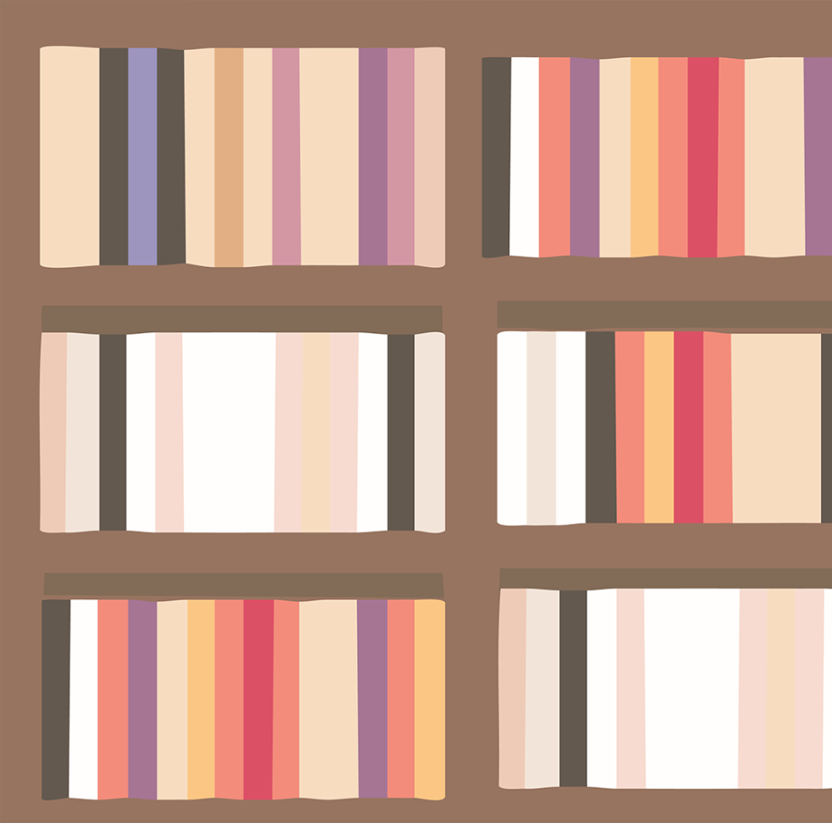

Application de narration interactive construite avec Next.js et React Flow. Le lecteur navigue dans un récit ramifié à travers des choix historiques, avec persistance des décisions, système d'authentification complet et déploiement sur Vercel.
Dans ce projet en collaboration avec Gabrielle Elemond-Beaudin, je me suis chargée du développement back-end.